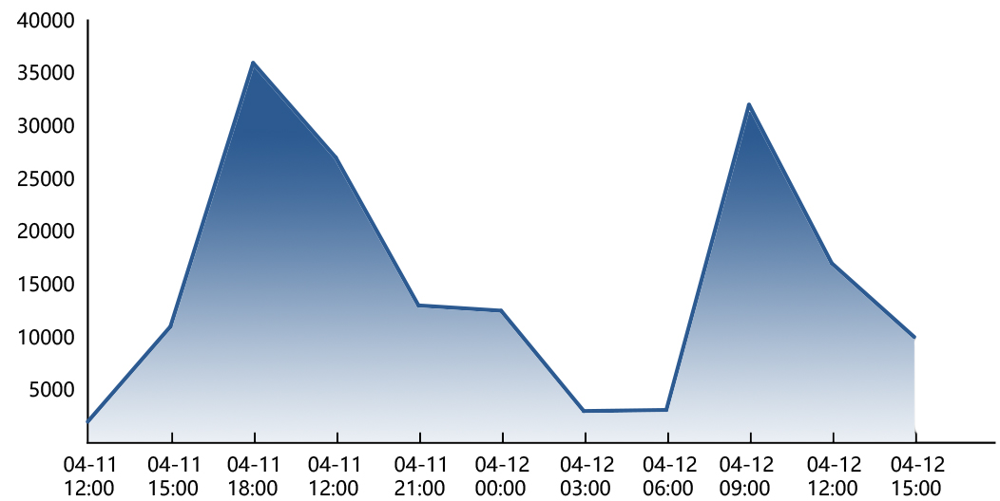

一张黑洞图引发版权界大地震，“流氓模式”大起底，1000多万超话网友声讨的视觉中国到底是行业良心还是版权猎手？公开资料显示，2018第三季度公司实现营收2.20亿元，占上市公司总收入81.81%的公司核心主业：“视觉内容与服务”实现营业收入5.73亿元，而这其中就包括了饱受诟病的大量版权相关营收。

一张黑洞图引发版权界大地震，“流氓模式”大起底，1000多万超话网友声讨的视觉中国到底是行业良心还是版权猎手？公开资料显示，2018第三季度公司实现营收2.20亿元，占上市公司总收入81.81%的公司核心主业：“视觉内容与服务”实现营业收入5.73亿元，而这其中就包括了饱受诟病的大量版权相关营收。
是谁给了视觉中国勇气让它将黑洞“据为己有”？不是别的，正是它和同行们堪称“无往而不胜”的“维权”经验。2016年以来，视觉中国及其子公司共涉诉讼近万起，全景视觉和东方IC所在公司映脉文化所涉诉讼量同样很多。这些诉讼案件中大部分是视觉中国及其子公司状告图片使用者侵犯版权。
值得注意的是，视觉中国所涉诉讼绝大部分由其子公司作为上诉人，巧妙地降低了自己的司法风险。

屡试不爽的“维权”流程
诉讼之外，视觉中国还有更多的维权事件没有进入司法程序。实际上，视觉中国、全景视觉和映脉旗下的图片网站已经形成了一个较为固定的流程。
以“煎蛋网“为例，视觉中国首先给在翻译外稿时转载Getty图库图片的煎蛋网发去通知，要求赔付侵权款目，在当事人的“求饶”下，视觉中国给出了“合作方案”，但价格导向侵权者购买视觉中国的年包业务。大多数情况下，“侵权者”就老老实实地就范，选择更为“经济”的年包业务，这样一笔维权也就成了视觉中国的一笔用户增收。但也有一些人对视觉中国提出的方案并不买账，这时，视觉中国将以单独赔偿的“天价”作为噱头来要挟。事情至此，“侵权者”所想的鱼死网破对薄公堂到头来几乎都是无奈赔付。
我国对于文字和音视频的版权保护已经有所发展，从图片版权相关的历年法律文书数量先增后减的趋势中也能看出我国对版权保护的力度加大，总体教育效果明显。
但是，图片的创作成本和获得成本不如音视频高，比对难度又比文字要大，种种因素使得有关图片的版权保护工作开展得并不理想。从各类版权作品登记数量来看，摄影类和美术类占比较大，且都与图片相关。种种资料和事件都体现了规范图片版权保护工作的必要性。
一面是媒体、自媒体乃至普通人对图片的大量使用需求，一面是法制精神下对版权的保护。究竟用什么样的图该付什么样的代价，还是一个需要讨论的问题。